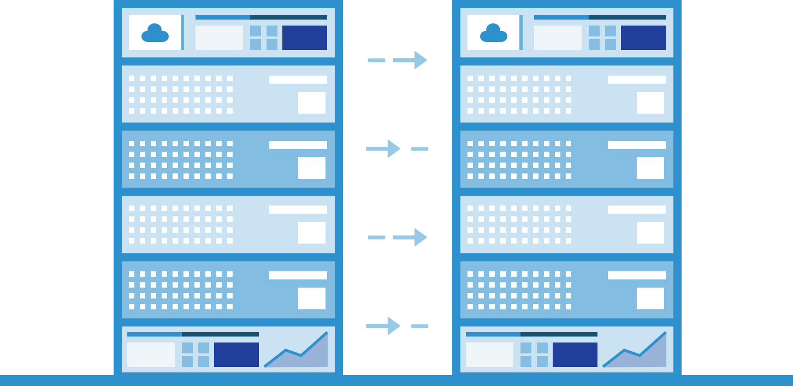

The Big Data to Knowledge (BD2K) program, in 2014, facilitates broad use of biomedical big data to develop and disseminate analysis methods and software, enhance training relevant for large-scale data analysis, and establish centers of excellence for biomedical big data.
In recent years, the growing number of massive data sets has changed the nature of biomedical research-leading towards opportunities for newer computational approaches. With the rapid improvement of biomedical tools and technologies, an increasing amount of complex biological data called “big data” is being produced and there is a need to analyze these results to yield research answers.
You may be wondering what exactly is big data?! Really, there is no strict definition for big data, but these fours Vs essentially provide the gist:
Here at CUNY City Tech and Weill Cornell Medicine, we believe that turning data, using research and analytics, will lead to bigger, ground breaking discoveries in the realm of biomedical sciences. Each student will be assigned to an advisor from Weill Cornell Medicine and given the chance to work alongside specific research areas from Metagenomics to Healthcare analytics.
Hiding with those mounds of data is knowledge that could change the life of a patient or change the world.
- Atul Butte
Bioinformatics, computational biology, is a relatively new and expanding field committed to the application of computer technology in the analysis and management of biological statistics. Some common career paths include: researcher, analyst and engineer. Each career path is rewarding because in this day and age, going forward-informatics will become a necessity.
If you’re serious about biomedical informatics, then be part of BD2BMI to begin your journey.
What is Big Data and how does it work?
Big data is better data